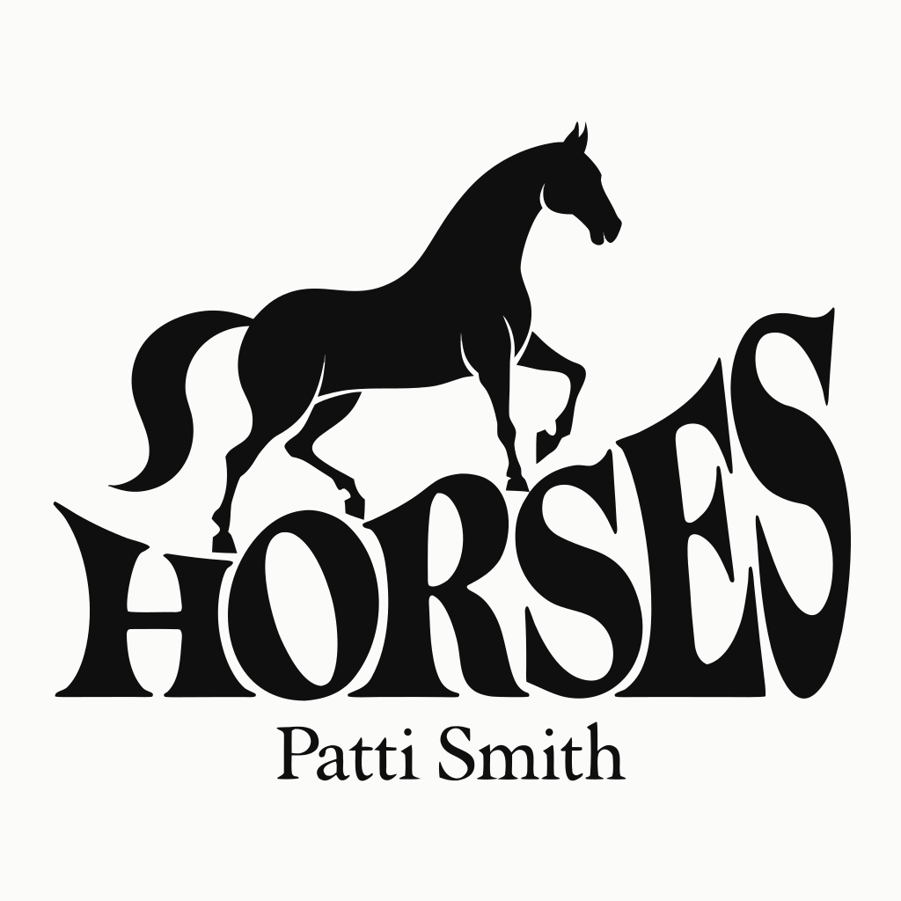
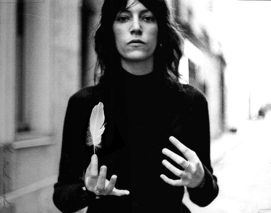
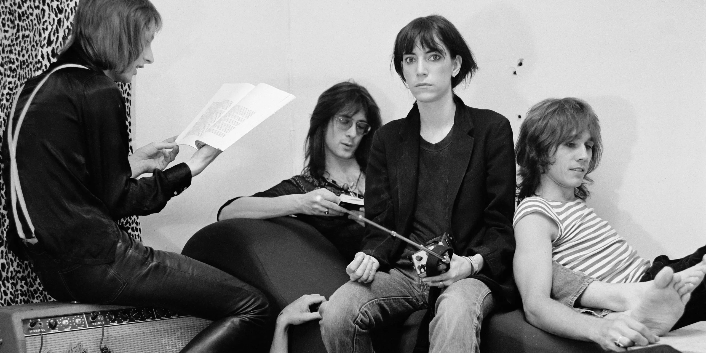
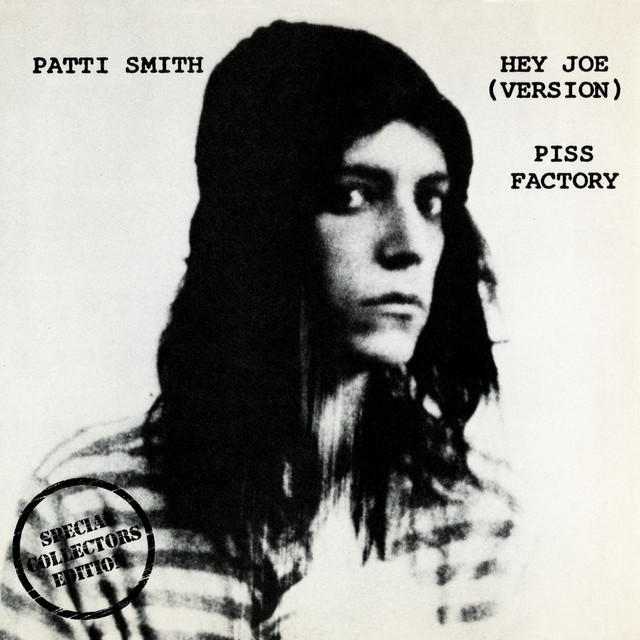
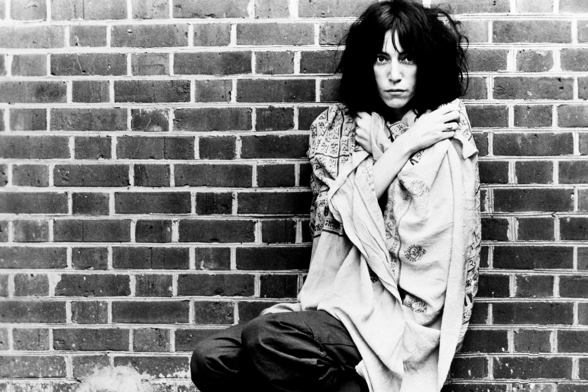
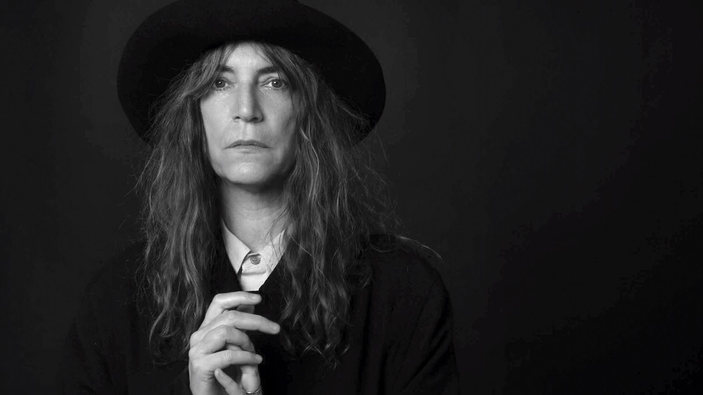

Horses,
1975 — un grito a la libertad y a ser uno
mismo
El
álbum que nació entre poesía, rebeldía y amistad en el mítico
Hotel Chelsea cumple medio siglo, y su influencia sigue viva gracias a
la
pasión de Patti Smith y su inseparable banda
"Jesus
died for somebody's sins but not mine."
Logo
vectorial — inspiración de Horses

01
— Patti Smith
La
sacerdotisa del punk
poético
Patricia
Lee Smith nació el 30 de
diciembre de 1946 en Chicago, Illinois, y creció en Pitman, Nueva
Jersey. Desde
joven fue una lectora voraz —Rimbaud, Blake, Whitman— y desarrolló una
sensibilidad artística que mezcló la poesía beatnik con la energía del
rock and
roll.
En
1967 se mudó a Nueva York sin
dinero ni contactos. Ahí conoció al fotógrafo Robert Mapplethorpe, con
quien
compartiría años de vida bohemia en el Chelsea Hotel. La relación entre
ambos
—intensa, creativa, compleja— marcaría profundamente su visión
artística.
Durante
los primeros años setenta publicó poemarios, escribió crítica de
rock para Rolling Stone y Creem,
y comenzó a
llevar su poesía al escenario, primero sola y luego acompañada de
guitarras. En
1974 formó el Patti Smith Group con Lenny Kaye. Un año después, todo
cambiaría
con Horses.

02
— El Álbum
Nueva
York, 1975 — la
ciudad al borde
Contexto
Nueva
York a mediados de los
setenta era una ciudad en quiebra —literal y figurativamente. En ese
caos
urbano, el CBGB de la calle Bowery se convirtió en el epicentro de una
nueva
escena: cruda, intelectual, urgente. Television, Ramones, Blondie. Y
Patti
Smith.

Antecedentes
Smith
ya era una figura de culto en
el underground poético. Su sencillo de 1974 Hey Joe /
Piss Factory llamó
la atención de Clive Davis, fundador de Arista Records, quien le
ofreció un
contrato discográfico. Era su momento.

Producción
El
álbum fue producido por John
Cale —ex miembro del Velvet Underground— en Electric Lady Studios,
Nueva York.
Cale apostó por un sonido sin ornamentos: guitarras directas, voz sin
filtros,
energía de sala en vivo. Grabado en apenas tres semanas.
El
resultado fue un disco que no sonaba como nada que hubiera existido
antes: mitad recital de poesía, mitad explosión de rock
primitivo. Horses fusionó
a Rimbaud con los Rolling Stones, el misticismo con la suciedad urbana.
El
famoso debut, Horses (1975), fue editado con
John Cale como productor, la memorable portada de Mapplethorpe y las
colaboraciones de Tom Verlaine (Television) y Allen Lanier (Blue Oyster
Cult).
Su impacto fue brutal e inmediato.
03
— Análisis
Las
canciones
El
álbum abre con una de las
canciones más impactantes: “Gloria”. Desde
el inicio, con el
verso “Jesus died for somebody's sins but not mine”,
se rompe
completamente con lo tradicional. Esta frase no solo marca rebeldía,
sino
también una fuerte afirmación de identidad y libertad individual. A lo
largo de
la canción, con la repetición de “G-L-O-R-I-A”,
el deseo, la
sexualidad y la autoexpresión se presentan sin censura, rompiendo
tabúes
sociales. También hay una mezcla de lo religioso con lo personal, lo
que
refuerza la idea de cuestionar normas impuestas. Personalmente, siento
que es
una declaración de independencia muy poderosa desde el inicio del álbum.
Después
continúa con “Redondo
Beach”, donde el ambiente cambia completamente hacia algo más
melancólico.
Desde versos como “I was looking for you”,
se transmite una
búsqueda constante que refleja pérdida, culpa y negación. La canción
aborda
temas como la muerte, el duelo y las consecuencias de los conflictos
emocionales. La escena en la playa simboliza el límite entre la vida y
la
muerte, y cómo a veces la realidad es difícil de aceptar. En mi
opinión, es una
canción muy emocional porque trata el dolor de una forma sutil pero
profunda.
La
siguiente es “Birdland”,
una de las piezas más complejas del álbum. A través de imágenes como la
transformación del padre en algo “no humano”,
la canción explora
temas como la muerte, la trascendencia y la búsqueda espiritual.
También habla
del duelo desde una perspectiva más imaginativa, donde la mente intenta
escapar
de la realidad creando nuevas interpretaciones. La identidad y el
sentido de
pertenencia también están presentes, mostrando una desconexión con el
mundo
real. Es una canción que se siente más como poesía experimental que
como música
convencional.
Luego
llega “Free Money”,
que para mí es la mejor canción del álbum. Desde el verso “Every
night
before I go to sleep”, se introduce el tema del deseo de
escapar de la
pobreza y alcanzar una vida mejor. La repetición de “free
money” refleja
obsesión, esperanza y también cierta desesperación. La canción aborda
temas
como la desigualdad, los sueños, la ambición y hasta la moralidad, ya
que
sugiere que el origen del dinero no importa si permite mejorar la vida
de
alguien. Me gusta mucho porque se siente muy real y humana; todos hemos
imaginado una vida distinta, por eso es mi favorita.
Escucha la canción:
Después
sigue “Kimberly”,
donde versos como “the sky is falling” crean
una sensación de
caos o crisis. Sin embargo, la canción también trata sobre el amor, la
protección y el vínculo familiar. Hay una mezcla entre un ambiente casi
apocalíptico y un sentimiento de cuidado hacia alguien cercano, lo que
genera
un contraste muy fuerte. En mi opinión, refleja cómo incluso en medio
del caos,
las relaciones personales pueden ser un punto de estabilidad.
Más
adelante está “Break It
Up”, que gira en torno a la transformación y la liberación
personal. El
verso repetido “Break it up” funciona
como un llamado a romper
con lo establecido, ya sea emocional o mentalmente. Frases
como “I want
to feel you” reflejan la necesidad de conexión, pero
también la
frustración de no lograrla. La canción aborda temas como la identidad,
el
cambio y la búsqueda de algo más profundo. Me parece una de las más
intensas
porque transmite esa sensación de querer liberarse a toda costa.
Luego
viene “Land”,
probablemente la canción más caótica y experimental del álbum. Desde
escenas
como la de Johnny, hasta frases como “there is no
land but the land”,
todo parece desordenado pero tiene un sentido simbólico. Aquí se
abordan temas
como la violencia, la confusión, la identidad y la transformación.
También hay
una sensación constante de búsqueda de significado en medio del caos.
En mi
opinión, es una canción difícil de interpretar, pero representa
perfectamente
el estilo libre y artístico de Patti Smith.
Finalmente,
el álbum cierra con “Elegie”, una canción
mucho
más lenta y melancólica. Desde el verso “I just don’t
know what to do
tonight”, se percibe una sensación de vacío, soledad y
confusión. La
canción trata sobre la pérdida, la memoria y la dificultad de seguir
adelante
después de la muerte de alguien. Frases como “all the
fire is frozen” refuerzan
esa idea de tristeza profunda, pero también hay un pequeño rastro de
resistencia emocional. Me parece un cierre perfecto porque deja una
sensación
de reflexión y silencio después de todo lo anterior.
Escucha
Horses
de Patti Smith y déjate llevar por
la experiencia completa dando clic al siguiente GIF.
04
— Legado
Un
disco que lo cambió todo
"Horses
abrió una
puerta que nunca se volvió a cerrar."
Horses
fue uno de los primeros
discos de rock firmado por una mujer que fue tomado con absoluta
seriedad por
la crítica y la industria. No como "música femenina" —una categoría
condescendiente— sino simplemente como rock. Como arte.
Su
influencia se extiende hasta
hoy: R.E.M., PJ Harvey, Kurt Cobain, Sonic Youth, Morrissey y decenas
de
artistas más señalaron a Horses como un punto de referencia
fundamental. La
revista Rolling Stone lo incluyó entre los 500 mejores álbumes de todos
los
tiempos.
Más
allá del rock, el disco estableció que la poesía y la música podían
fusionarse sin que ninguna de las dos perdiera su potencia. Eso sigue
siendo
radical.

05
— Reflexión Final
Mi
lectura de Horses
Hoy,
aun siendo un adolescente de
17 años, refugiándome un poco —o tal vez mucho— en la música, la cual
me ha
ayudado a entender quién soy, traigo uno de mis álbumes más personales,
que más
que música, es una forma de expresión libre y sin miedo.
Después
de escuchar Horses, llegó
ese sentimiento de reconectar con una parte tuya que nunca antes habías
sentido, cuando los moldes y los estereotipos desaparecen y solo quedas
tú, en
tu versión más auténtica, en especial en esta etapa de mi vida llamada
“adolescencia”, llena de tantos cambios, en especial el de la búsqueda
de la
identidad, de querer ser tú sin ataduras. Esta etapa que ahora llamo
“la
rebeldía”, desde una nueva perspectiva.
Y
es justo cómo esta rebeldía está
plasmada en este gran álbum, que a más de 50 años parece ser tan
fresco, porque
si algo he aprendido de Patti Smith es a nunca dejar de ser yo mismo y
reinventarme las veces que sea necesario. Me enseñó que este mundo es
tan
hermoso como para vivir en moldes y con ataduras, amar lo que haces y
cada una
de las partes que te hacen ser tú.
Y
al final, eso es lo que hace que
Horses siga siendo tan importante para mí: no solo se escucha, se
siente, y te
cambia un poco la forma de ver las cosas.

06
— Referencias
Fuentes
Smith,
P. (2011). Éramos
unos niños (R. Pérez Pérez, Trad.). Lumen.